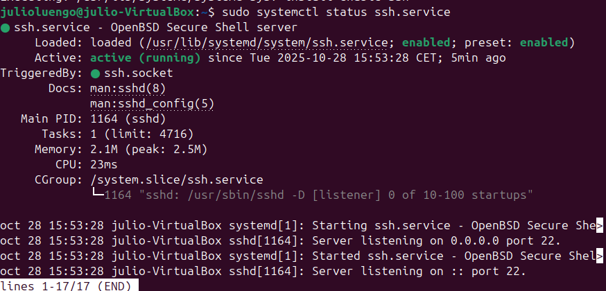
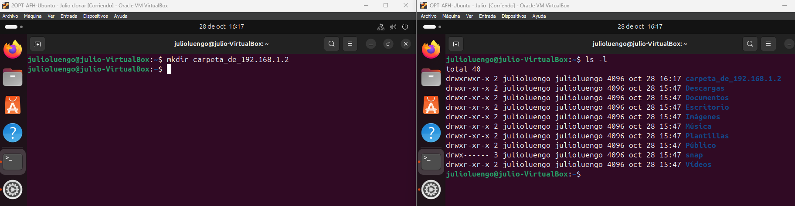

Conexión remota por SSH en Linux
- Crear usuario personalizado $ sudo adduser nombreapellido
- Instalar OpenSSH Server
$ sudo apt update$ sudo apt install openssh-server # Intalamos openssh$ sudo systemctl start ssh #Iniciamos servicio ssh$ sudo systemctl enable ssh #Habilitado el servicio ssh
- Imagen (Status servicio ssh) 
- Probamos conexión SSH $ ssh nombreapellido@ip_del_servidor # ip del servidor 192.168.1.1
- Creación de una carpeta por SSH 
Estado del servicio SSH en el sistema Linux.

Ejemplo de conexión SSH desde Linux.
Creación y visualización de carpetas por SSH.